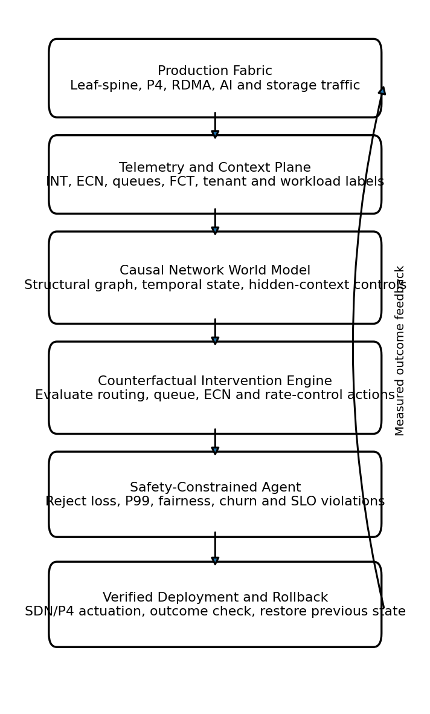
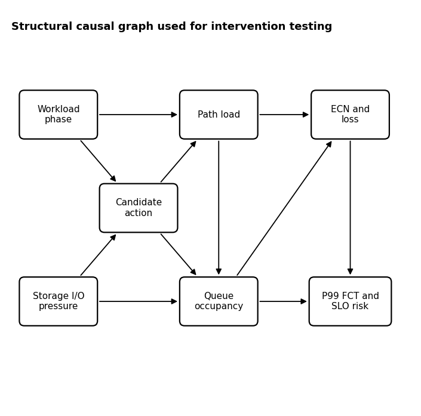
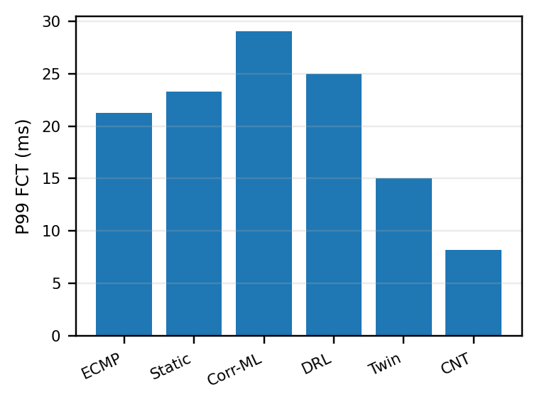

An autonomous controller can detect congestion and recommend a routing, queue, marking, or
rate-control change — but a predicted improvement doesn't establish that the change is
safe. CausalNetTwin estimates the counterfactual outcome of a candidate action under
do(A=a) before it touches production, rejects any candidate that violates
configured tail-latency, loss, fairness, churn, or SLO limits, and automatically rolls back
when the observed outcome diverges from what was approved.
Modern AI data centers mix synchronized AllReduce bursts, storage replication, Kafka, Spark shuffle, and latency-sensitive traffic on the same leaf-spine paths. Moving an elephant flow off one congested uplink can overload another tenant's path. Network digital twins support planning and what-if analysis, and recent work adds AI-driven management, closed-loop SLA assurance, and causal optimization — but no reviewed system jointly reports action-level causal testing, explicit multi-tenant safety limits, post-deployment verification, and automatic rollback.
Attributes a workload-phase transition to its own intervention, because it only conditions on A=a as observed historically — it never asks what would have happened under the intervention specifically.
Estimates Y(t;a) under an explicit do(A(t)=a) intervention on a temporal structural causal model, rejects the candidate if any predicted safety bound is violated, and verifies + rolls back after deployment.
Condensed from the paper's Table I. Full reference list and discussion in the companion manuscript.
| Work | Action-conditioned causal model | Multi-tenant AI fabric | Explicit safety gate | Post-action verification | Automated rollback |
|---|---|---|---|---|---|
| CiiNet | Yes | Not evaluated | Not reported | Iterative evaluation | Not reported |
| Trustworthy NDT | What-if validation | Not evaluated | Not reported | Yes | Not reported |
| Adaptive NDT | Predictive model | Not evaluated | Not reported | Drift synchronization | Not reported |
| C-RAN DTN | Not reported | No | SLA logic | Yes | Not reported |
| CausalNetTwin | Yes | Yes | Yes | Yes | Yes |
Telemetry and context feed a causal world model; the counterfactual engine screens candidate actions against the safety gate before anything is deployed; the verifier watches the outcome and restores the previous state on material deviation.


Generated by experiments/run_benchmark.py against the reproducible structural simulator — every number below is read directly from results/*.csv in the repository, not hand-picked. Six control methods, six workload/failure scenarios, common random numbers across all methods.
Aggregate P99 flow completion time across all scenarios and seeds. Lower is better.
| Method | P95 ms | P99 ms | SLO % | Loss % | Fairness |
|---|---|---|---|---|---|
| ECMP | 18.91 | 21.23 | 35.87 | 0.232 | 0.884 |
| Static-TE | 16.83 | 23.30 | 26.53 | 0.146 | 0.890 |
| Correlation-ML | 20.48 | 29.02 | 23.64 | 0.169 | 0.883 |
| DRL | 15.36 | 24.98 | 14.02 | 0.091 | 0.889 |
| Twin (no causal) | 8.36 | 15.03 | 4.79 | 0.025 | 0.903 |
| CausalNetTwin | 4.50 | 8.19 | 1.97 | 0.009 | 0.910 |
| Method | Source loc. % | Success % | Harmful % | Rollback % | Churn % |
|---|---|---|---|---|---|
| Static-TE | 82.06 | 82.06 | 17.94 | 0.00 | 3.05 |
| Correlation-ML | 72.05 | 72.05 | 27.95 | 0.00 | 14.06 |
| DRL | 79.16 | 79.16 | 20.84 | 0.00 | 17.88 |
| Twin (no causal) | 85.16 | 85.76 | 10.30 | 3.94 | 11.52 |
| CausalNetTwin | 94.03 | 99.35 | 0.03 | 0.62 | 5.25 |
Diagnostic accuracy and action safety. CausalNetTwin localizes the simulated congestion source correctly in 94.03% of intervention windows and accepts a harmful action in only 0.03% of decisions — down from 10.30% for a non-causal twin and 27.95% for correlation-based ML — while keeping a 99.35% success rate among accepted interventions.

| Scenario | ECMP ms | Twin (no causal) ms | CausalNetTwin ms |
|---|---|---|---|
| Mixed leaf-spine | 13.83 | 7.50 | 2.19 |
| Fat-tree AllReduce | 16.42 | 10.09 | 2.49 |
| Oversubscribed 4:1 | 24.39 | 17.74 | 12.18 |
| Link failure | 23.84 | 14.76 | 6.56 |
| Elephant arrival | 23.13 | 13.16 | 6.17 |
| Backup + AI collision | 25.79 | 26.90 | 19.58 |
P99 FCT by stress scenario. The hardest case — backup replication colliding with AI collective traffic in an oversubscribed fabric — exceeds the nominal 12 ms target for every method, because demand exceeds safe capacity. CausalNetTwin still lowers the tail and rejects unsafe route migration rather than fabricating spare capacity.
The counterfactual MAPE is 7.78% for CausalNetTwin versus 13.49% for the non-causal twin and above 18% for correlation-ML/DRL. The additional 1.49 ms over the non-causal twin is the measured cost of causal adjustment, candidate screening, and uncertainty checks — well below the control-window duration used in the experiments.
| Method | Counterfactual MAPE % | Telemetry overhead % | Inference ms |
|---|---|---|---|
| Correlation-ML | 22.31 | 1.46 | 2.90 |
| DRL | 18.70 | 1.77 | 4.80 |
| Twin (no causal) | 13.49 | 2.10 | 5.70 |
| CausalNetTwin | 7.78 | 2.65 | 7.19 |
Structural, event-driven simulator — not a packet-level substitute for ns-3 or a P4 testbed. Six automated tests verify deterministic reproduction, safety rejection, rollback behavior, and tail-latency improvement.
# clone, install, and reproduce git clone https://github.com/sunilgentyala/CausalNetTwin.git cd CausalNetTwin_Repo python -m venv .venv && source .venv/bin/activate # Windows: .venv\Scripts\activate pip install -e ".[dev]" python -m pytest -q python -m causalnettwin.cli --output results --seeds 30 --steps 600
A model version is accepted into the next validation stage only after calibrated intervals on held-out conditions, a low harmful-action rate under real packet scheduling and controller delay, and bounded rollback recovery without a second congestion event.
| Layer | Planned implementation | Required evidence |
|---|---|---|
| Topology & traffic | Containerlab / Mininet; leaf-spine & fat-tree; AllReduce, Kafka, Spark, storage replication | Per-flow traces, topology files, workload manifests |
| Programmable data plane | BMv2/P4 INT, ECN marking, queue & path telemetry | Switch resource cost, timestamp accuracy, telemetry loss |
| Control plane | ONOS / Ryu, scoped canary deployment, stored rollback state | Action latency, policy conflicts, rollback completion |
| Scale & failures | ns-3 and hardware trials with link failure, stale telemetry, oversubscription | Calibration, recovery time, tail latency, safety violations |
The manuscript itself is intentionally not stored in this repository, in line with IEEE's prior-publication policy. Cite the software artifact via CITATION.cff until the paper is accepted.
@software{causalnettwin2026, author = {Gentyala, Sunil and Darisi, Suresh Kumar and Martin, John and Caprio, Floriano}, title = {CausalNetTwin: A Counterfactual Network Digital Twin for Safe Agentic Remediation}, year = 2026, url = {https://github.com/sunilgentyala/CausalNetTwin} }